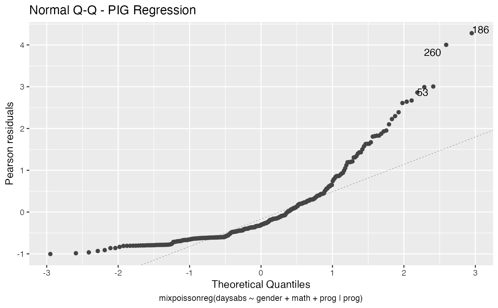
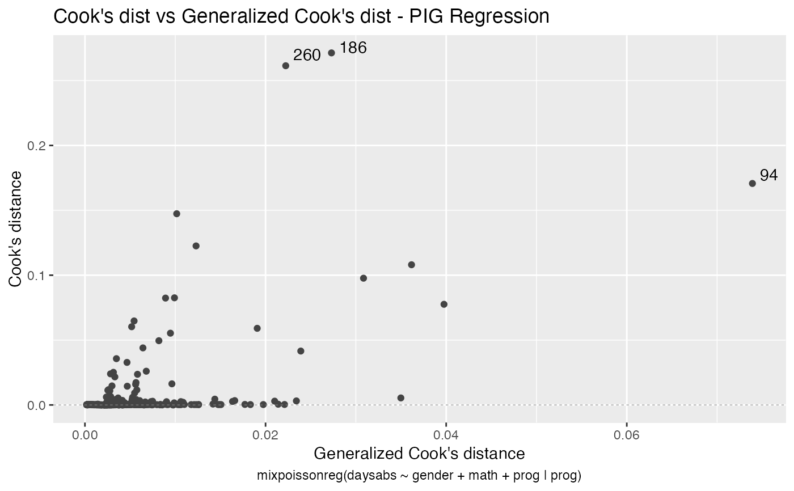
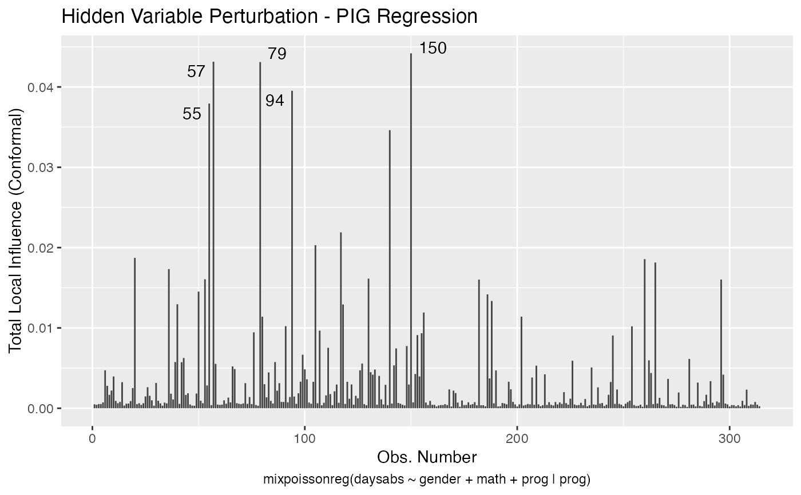
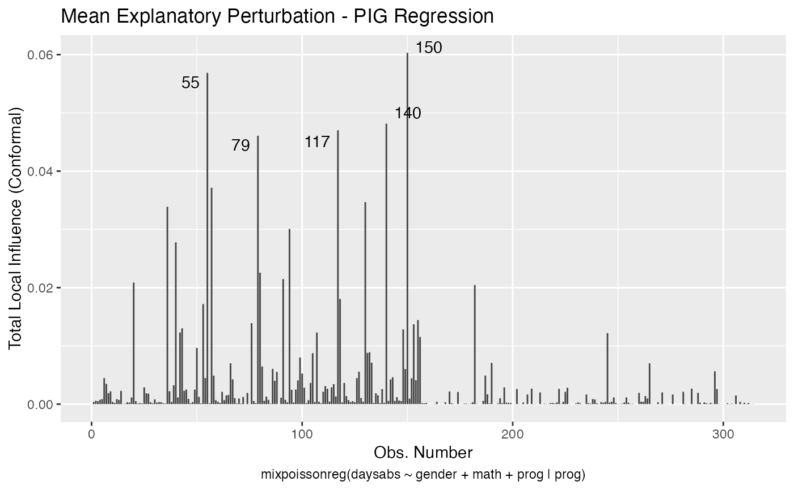

School administrators study the attendance behavior of high school juniors at two schools.
data("Attendance")
Data frame containing 314 observations on 4 variables.
number of days absent.
gender of the student.
three-level factor indicating the type of instructional program in which the student is enrolled.
standardized math score.
Data can be obtained from Introduction to Statistical Modeling Github Repository. See also Barreto-Souza and Simas (2020) for further details.
School administrators study the attendance behavior of high school juniors at two schools. Predictors of the number of days of absence include the type of program in which
the student is enrolled and a standardized test in math. Attendance data on 314 high school juniors from two urban high schools.
The response variable of interest is days absent, daysabs. The variable math is the standardized math score for each student.
The variable prog is a three-level factor indicating the type of instructional program in which the student is enrolled.
Hughes, M. and Fisher, T. (2020) Introduction to Statistical Modeling.
# \donttest{ data("Attendance", package = "mixpoissonreg") daysabs_fit <- mixpoissonreg(daysabs ~ gender + math + prog | gender + math + prog, data = Attendance, model = "PIG") summary(daysabs_fit)#> #> Poisson Inverse Gaussian Regression - Expectation-Maximization Algorithm #> #> Call: #> mixpoissonreg(formula = daysabs ~ gender + math + prog | gender + #> math + prog, data = Attendance, model = "PIG") #> #> #> Pearson residuals: #> RSS Min 1Q Median 3Q Max #> 239.2012 -1.0836 -0.6059 -0.3062 0.2518 4.1193 #> #> Coefficients modeling the mean (with link): #> Estimate Std.error z-value Pr(>|z|) #> (Intercept) 2.750807 0.165409 16.630 < 2e-16 *** #> gendermale -0.251196 0.136869 -1.835 0.06646 . #> math -0.006730 0.002679 -2.512 0.01201 * #> progAcademic -0.423430 0.148471 -2.852 0.00435 ** #> progVocational -1.260804 0.203444 -6.197 5.74e-10 *** #> #> Coefficients modeling the precision (with link): #> Estimate Std.error z-value Pr(>|z|) #> (Intercept) 1.211293 0.438426 2.763 0.005730 ** #> gendermale -0.114168 0.304676 -0.375 0.707870 #> math -0.005687 0.006098 -0.933 0.351040 #> progAcademic -1.284044 0.386334 -3.324 0.000888 *** #> progVocational -1.610245 0.475612 -3.386 0.000710 *** #> --- #> Signif. codes: 0 '***' 0.001 '**' 0.01 '*' 0.05 '.' 0.1 ' ' 1 #> #> Efron's pseudo R-squared: 0.1861608 #> Number of iterations of the EM algorithm = 3302daysabs_fit_red <- mixpoissonreg(daysabs ~ gender + math + prog | prog, data = Attendance, model = "PIG") summary(daysabs_fit_red)#> #> Poisson Inverse Gaussian Regression - Expectation-Maximization Algorithm #> #> Call: #> mixpoissonreg(formula = daysabs ~ gender + math + prog | prog, #> data = Attendance, model = "PIG") #> #> #> Pearson residuals: #> RSS Min 1Q Median 3Q Max #> 239.2973 -1.0034 -0.6102 -0.3108 0.2736 4.2833 #> #> Coefficients modeling the mean (with link): #> Estimate Std.error z-value Pr(>|z|) #> (Intercept) 2.805402 0.162297 17.286 < 2e-16 *** #> gendermale -0.282152 0.122795 -2.298 0.02158 * #> math -0.007771 0.002399 -3.239 0.00120 ** #> progAcademic -0.423219 0.148103 -2.858 0.00427 ** #> progVocational -1.216361 0.197274 -6.166 7.01e-10 *** #> #> Coefficients modeling the precision (with link): #> Estimate Std.error z-value Pr(>|z|) #> (Intercept) 0.9254 0.3310 2.796 0.005172 ** #> progAcademic -1.2774 0.3854 -3.314 0.000919 *** #> progVocational -1.7410 0.4507 -3.863 0.000112 *** #> --- #> Signif. codes: 0 '***' 0.001 '**' 0.01 '*' 0.05 '.' 0.1 ' ' 1 #> #> Efron's pseudo R-squared: 0.1858068 #> Number of iterations of the EM algorithm = 2635# }